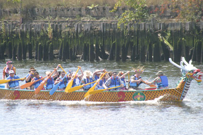
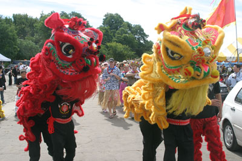

Dragon Boat Hashing
Run #961, Sept 11, 2004
Hare: Dr WHO
Location: State Pier, Pawtucket
Weather: 70’s and 80’s, Clear
Present:
RIH3: Dr WHO, Basket Boom Boom, Bondo Jovi, Oozing SD, SESYB, Async, Fuwangi Boner, WIPOS, Just Jodie, Just Async Jr., Just Jeanne, Just Sean, Just John, Just SESYB’s Roommate, Just SESYB’s Roommate’s Boyfriend, Seamus. Support: Dogmeat, Just Big Sh*t, Just Basket’s Mother-in-Law.
NewportH3: Evil B*tch RIPTA, Ms Gay RI, Stone Age, Pardon My Peter, Leave Him for Beaver, Just Christie.
Cape Cod H3: Mother Shucker, Just Valerie, Just Karen.
Boston H3: Cums Alone.
Hartford H3: Follow My Tits.
The Hash:
Trail started off in the School Street Medical building in Pawtucket. Flour led west to a path in the woods, where a check mark confused several who turned south away from the obvious noise and confusion of the Chinese Festival. Nevertheless, most were able to find their way north on trail, which led to Dr WHO’s campsite at the shaded part of the State Pier.
Food was provided along with beer, and the group downed a few, and prepared for the r*ces by getting out their grass skirts, coconut bras and leis. The first heat was not until 10:30, so there was plenty of time to prepare. A few boom boxes were tried, but none could generate sufficient volume for playing the Hawaii 5-0 theme on the water. The group was forced to listen to some bizarre folk-music provided by Oozing.
With a half hour to go, the group headed out to the main area in formation, the first-team members hand picked for their ability to stand in a line when asked. The staging area reached, they formed a circle, and led by Basket performed their first (of many) renditions of the Haka. This is a Maori War-Chant, used by the New Zealand Rugby Team. It obviously fitted well with the theme of Hawaiians paddling in Chinese boats. Or so it seemed to Basket. And the audience was most appreciative. They also enjoyed “Father Abraham” as performed by 25 people in grass skirts.

The first heat went off on time. In lane one, the hashers showed their stuff and handily crushed their opposition: the Pawtucket Police Department and the Corridor MisFITTs a group of well-meaning women who were either cowed by the Maori War-Chant or afraid of Dr WHO’s steering. Victory meant semifinals, and a few hours later the team, with substitutions, was back in the circle. The Haka was again mutilated with great vigor and enthusiasm. (So much so that the organizers of the stage show later insisted that it be re-enacted on stage under the big-top for the seated audience of parents and children. Another triumph for the RIH3. But I digress.) This time, the group performed the “Lion Hunt”. Again, some of the audience were perplexed. Several of Dr WHO’s patients were seen looking for a new surgeon in the Yellow Pages.

The second heat was against the second boat of the NYC Metropolitan Area Dragons (“Absolutely M.A.D.) and the local team from Riverfront Lofts. The locals were no problem. But due to a combination of being in (perfect) position on the starting line too early, and bribery, corruption and incompetence on the part of the starters, the hash boat was caught with their skirts up and pants down at the start. Despite a valiant effort, they were beaten by the New Yorkers by four seats (1/4 boat length). It was a travesty. And it certainly couldn’t have been the effects of 5 hours of beer for some of the hashers.
The day wore on, and after the aforementioned stage performance, the consolation heat was a disappointment, with another close second to the “Peking P’Rowers” With all the collective time the hashers had put into training (some had spent total times upwards of 69 minutes of intensive training in the weeks before!) one would have thought it a foregone conclusion that we would win. But by this time, with the beer stocks running low, most were relieved not to actually have to perform the Haka again.
While some of the team headed for home, the hardcore stayed for the awards. Those who left missed: the cleanup, the Trinity brew, the awards, the circle, more songs, less Haka, the theft of Chinese Flags and near theft of the Red Bull tent, and the progressive and embarrassing intoxication of Oozing, Fuwangi and Just SESYB’s Roommate’s Boyfriend which continued throughout the evening and spread humiliatingly to the East Avenue Café and thence to Waterfire in Providence. But just wait ‘till next year!
Click here for final results for all teams
On On